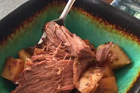

Marie's Easy Slow Cooker Pot Roast

Description
This slow cooker pot roast always turns out moist and juicy. It's cooked with carrots, onion, celery, and potatoes.
Ingredients
- 4 pounds chuck roast
- salt and pepper to taste
- 2 tablespoons olive oil
- 1 packet dry onion soup mix
- 1 cup water
- 3 carrots, chopped
- 3 potatoes, peeled and cubed
- 1 onion, chopped
- 1 stalk celery, chopped